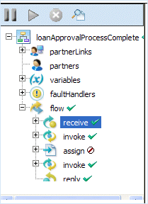
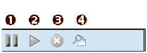

Using the Process Details Outline View
The following illustration shows a sample Outline view of a process instance.

Outline View Menu Bar

|
1 |
Suspend running process |
|
2 |
Resume suspended process |
|
3 |
Terminate running or suspended process |
|
4 |
View Process Log. Display the execution details for the process instance. The logging level must be set to Full or Execution, as described on the Configuration page of the Engine topic. |
Structural elements of a BPEL process
- Process name is the local part of the process qualified name
- Partner links represent the Web services that are invoked
- Variables contain the message or other data received, manipulated, and sent from the process
- Correlation sets, if present, contain the message properties that track different conversations carried on by the process
- Fault handlers, if present, catch faults thrown by process activities
- Event handlers, if present, run concurrently with a process scope and invoke an activity based on an alarm or event received
- Activities carry out the processing steps
To view details about a process element, select it. The following table describes each element.
|
Process Element in Outline |
Details Displayed |
|---|---|
|
Process name |
Current state, Start/end time of process instance, and deployment details for the process. For details, see Configuration in the Engine topic. Fault details may also be displayed. |
|
Partner links |
The type(s) of partner links: partner role and/or my role. The endpoint reference of the partner link service. This reference is defined in one of the following ways:
|
|
Variables |
The variable type: message, simple, or schema. The current value of the variable. For a running process, the value is current as of the time you opened or refreshed the Process Details window. |
|
Correlation sets |
The message property definition and current value. A correlation set contains a message property to ensure that each process conversation is uniquely identified. |
|
Fault handlers |
Name, state, and details of fault handling activity at the process level. Scopes can have their own local fault handlers. |
|
Event handlers |
Name, state, and details of event handling activity at the process level. Scopes can have their own local event handlers. |
|
Activities |
The activities section of the Outline begins with a flow activity that represents the main container for the whole process. Within the flow, there is a list of all process activities. The activities are in the same order as in the BPEL XML code. If the process was designed in ActiveBPEL Designer, the order matches the Outline view order. Note: The activity list shown is not necessarily in execution order. For each activity, you can view the current execution state and activity definition. |
|
Links |
If an activity is the source of a link, the link is displayed below the activity node. Link properties are displayed, including link status (whether or not the link executed), the transition condition, if it exists, and the link’s target activity. |
Activity States
You can determine the execution status of each activity by looking at the indicator on the right side of the activity.
|
|
Executing |
|
|
Ready to Execute |
|
|
Finished |
|
|
Faulted. Occurs when a fault is thrown during the execution of an activity. |
|
|
Terminated. Occurs when the process is manually terminated. |
|
|
Dead Path |
|
|
Suspended |
|
(none) |
Inactive (the initial state of an activity) or Terminated. |

For a running process, the icon next to an activity may change if you refresh the Process Details window.
Process States
The process can have the following execution states:
|
Completed |
Normal completion |
|
Faulted |
Completed with a fault or termination |
|
Running |
Snapshot of the executing process when you open the Process Details window. The process continues to run, but the Process Details window is not updated unless you select Refresh. |
|
Compensatable |
A completed subprocess. A subprocess is invoked by another process and is eligible for compensation within the enclosing scope of the calling process. |
|
Suspended |
The process stops running when you select Suspend from the Process Details window. It can also be suspended by a BPEL Suspend activity. |
See also:
- Using the Process Details Graphic View
- Inspecting Where and Why an Activity Faulted
- Working with Variable Attachments
Back to ActiveBPEL® Engine Administration Console Help
Copyright (c) 2004-2008 Active Endpoints, Inc.